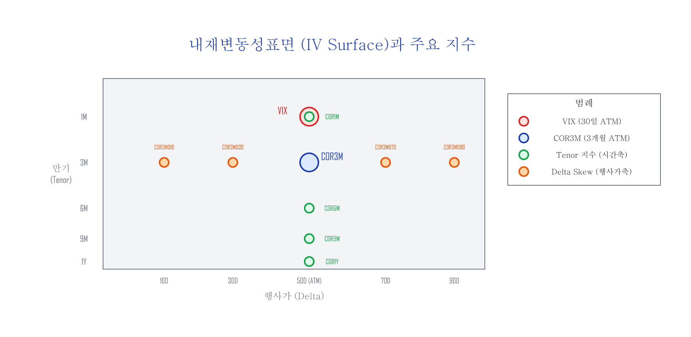
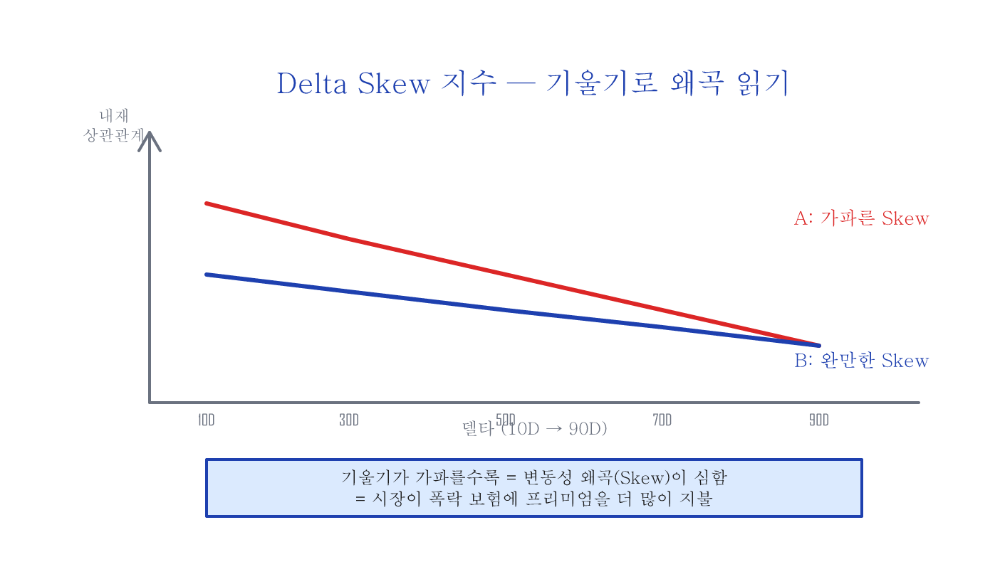
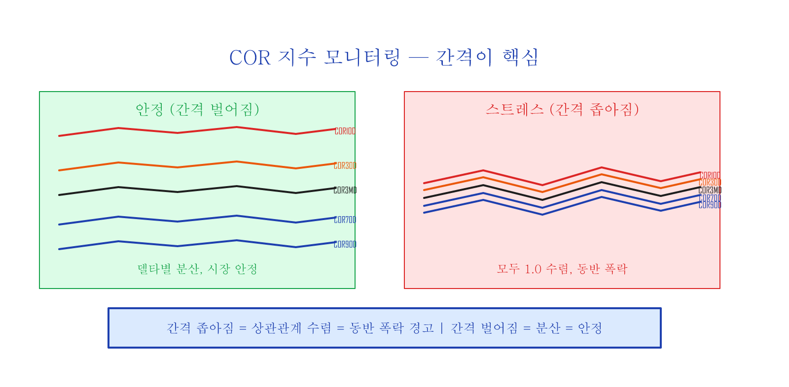
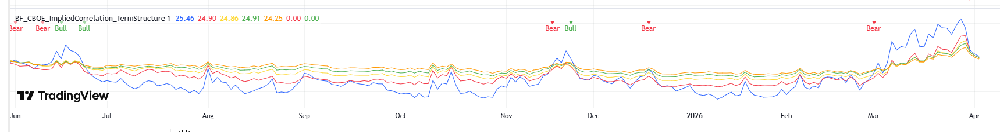

시장 심리 변동성 지수 — Implied Correlation과 IV Surface¶
관련 글: 변동성 Skew | Hedging the Wings
내재변동성(IV)이란¶
S&P500 지수 옵션의 내재변동성(IV: Implied Volatility)은 SPX 옵션 참여자들이 해당 옵션의 만기일까지 예상하고 암묵적으로 동의한 주식시장의 "미래 변동성 추정값"을 나타냅니다.
| 구분 | 설명 |
|---|---|
| 역사적 변동성 (HV/RV) | 과거 특정 기간 동안 이미 실현된 주가로 계산 |
| 내재변동성 (IV) | 시장의 모든 정보가 녹아든 후, 옵션 시장 참여자들이 예측하고 동의한 추정값 |
SPX 옵션의 IV를 옵션 시장 참여자들이 동의한 보험료 가격이라 생각할 수 있습니다. 모두 상승을 보기 시작하면 call 옵션의 IV가 증가하고, 모두 하락을 보기 시작하면 put 옵션의 IV가 증가합니다.
내재변동성표면(IV Surface)을 잘 살펴보고 있으면 뉴스를 보지 않아도, 시황을 읽지 않아도, 남들보다 더 빠르게 시장 참여자들의 의중을 엿볼 수 있지 않을까?
왜 이 지표들을 봐야 하는가?¶
2020년 2월, 뉴스에서 코로나 확산을 본격적으로 다루기 전에 옵션 시장에서는 이미 변화가 감지되고 있었습니다. 내재상관관계가 30% 근방에서 60% 이상으로 급등하기 시작했고, 이는 기관 투자자들이 포트폴리오 보험(put 옵션)을 대량 매수하고 있다는 신호였습니다.
뉴스를 따라가면 항상 늦습니다. 옵션 시장의 IV Surface와 COR 지수들은 기관 투자자의 행동이 먼저 반영되는 곳이기 때문에, 뉴스보다 빠른 신호를 제공합니다.
내재변동성표면 (IV Surface)¶
S&P500 지수(SPX) 옵션의 현재가 대비 행사가 수준(Moneyness)을 X축, 만기일(Maturity)을 Y축으로 하여 내재변동성을 그래프로 그리면 내재변동성표면(IV Surface)을 얻을 수 있습니다.

이 표면 위의 각 점은 특정 행사가와 만기일 조합의 IV를 나타냅니다. CBOE는 이 표면 위의 다양한 점에서 내재상관관계(Implied Correlation) 지수를 계산합니다.
VIX 지수¶
VIX 지수는 시장의 공포 온도계로, SPX 옵션의 광범위한 외가격(OTM) 행사가(콜+풋)를 사용하여 향후 30일간의 기대 변동성을 계산하는 대표적인 시장 지표입니다. 등가격(ATM: At The Money — 현재가 근처) 단일 지점이 아니라, IV Surface의 넓은 영역을 종합적으로 반영합니다. 즉, SPX 지수 옵션 시장 참여자들이 30일 후 시장의 변동성을 예측하고 암묵적으로 동의한 추정값입니다.
VIX 계산 방법 (심화)
VIX는 변동성을 통째로 추적하는 구조인 분산스왑(variance swap) 복제 방식을 사용합니다. 단일 행사가의 IV가 아니라, 다양한 OTM 행사가의 옵션 가격을 가중 합산하여 30일 기대 분산을 계산하고, 그 제곱근을 연율화하여 지수로 표현합니다.COR3M 지수 — 3개월 내재상관관계¶
CBOE에서 2021년 7월 1일 새로 런칭한 지수로, 정식 명칭은 Cboe 3-Month Implied Correlation Index입니다.
COR3M은 IV Surface에서 만기 3개월, 등가격(ATM, 50 델타 — 현재 주가 근처) 지점의 내재상관관계를 나타냅니다.
내재상관관계(Implied Correlation)란 S&P500 지수 옵션의 IV와 S&P500 상위 50개 종목의 개별 옵션 IV 사이의 상관관계를 0~100% 수치로 표현한 것입니다. 쉽게 말해, 개별 종목들이 얼마나 같은 방향으로 움직이는지를 나타냅니다.
| 시장 상태 | 내재상관관계 | 의미 |
|---|---|---|
| 상승 추세 | ~30% 근방 | 상승/하락 종목이 혼재, 주도주가 상승 주도 |
| 하락 추세 | 60% 이상 슈팅 | 모든 종목이 다 같이 하락 |
COR3M은 CBOE 웹사이트(cboe.com)에서 실시간으로 확인할 수 있습니다.
Tenor 지수 — 시간축 확장 (2022년 추가)¶
COR3M의 성공적인 데뷔에 힘입어, CBOE에서는 2022년 7월 18일 8개의 내재상관관계 지수를 추가 런칭했습니다. IV Surface의 시간축(Tenor)을 따라 4개, 행사가축(Delta)을 따라 5개입니다.
4개의 Tenor 지수 (ATM 고정, 만기만 변경):
| 지수 | 만기 | 행사가 | 용도 |
|---|---|---|---|
| COR1M | 1개월 | 50 델타 (ATM) | 단기 투자 심리 |
| COR6M | 6개월 | 50 델타 (ATM) | 중기 투자 심리 |
| COR9M | 9개월 | 50 델타 (ATM) | 중장기 투자 심리 |
| COR1Y | 1년 | 50 델타 (ATM) | 장기 투자 심리 |
Delta Skew 지수 — 행사가축 확장¶
5개의 Delta Skew 지수 (3개월 고정, 행사가만 변경):
| 지수 | 만기 | 행사가 | 의미 |
|---|---|---|---|
| COR10D | 3개월 | 10 델타 | 깊은 OTM put 영역 |
| COR30D | 3개월 | 30 델타 | OTM put 영역 |
| COR3MD | 3개월 | 50 델타 | ATM 기준선 |
| COR70D | 3개월 | 70 델타 | OTM call 영역 |
| COR90D | 3개월 | 90 델타 | 깊은 OTM call 영역 |
S&P500 지수 옵션에는 변동성 왜곡(Volatility Skew) 현상이 있습니다. 내재상관관계의 Delta Skew 지수들을 한 그래프에 그리면, IV 왜곡의 곡선이 펴져서 거의 직선에 가까운 모양으로 표시됩니다. 이 직선의 기울기로 Skew 정도를 한 눈에 비교할 수 있습니다.

직선의 기울기가 음의 방향으로 더 가파른 경우(A)가 완만한 경우(B)보다, 내재변동성표면에서 더 가파른 IV 왜곡으로 표현됩니다.
모니터링 — 간격이 핵심¶

Delta Skew 내재상관관계 지수들의 과거 가격들을 추적할 때, 핵심은 지수들 사이의 간격입니다:
- 간격이 벌어지면: 델타별 상관관계가 분산 → 시장 안정
- 간격이 좁아지면: 모든 상관관계가 1.0으로 수렴(= 모든 종목이 완전히 같은 방향으로 움직인다는 뜻) → 하락 스트레스 (동반 폭락)
아래는 TradingView에서 Tenor COR 지수들(COR1M~COR1Y)을 실시간으로 모니터링하는 차트입니다:

2025년 8~10월 안정 구간에서는 지수들의 간격이 벌어져 있고, 11월과 12월 하락 구간에서는 간격이 좁아지면서 Bear 신호가 발생하는 것을 확인할 수 있습니다.
COR 지수들은 CBOE 웹사이트에서 실시간 데이터를 확인하거나, TradingView에서 아래 Pine Script로 모니터링할 수 있습니다.
TradingView Pine Script — BF_CBOE_COR_TermStructure
//@version=6
indicator("BF_CBOE_COR_TermStructure", overlay=false)
mult = input.float(1.0, "Multiplier", minval=0.1, step=0.1)
cor1m = request.security("CBOE:COR1M", timeframe.period, close) * mult
cor3m = request.security("CBOE:COR3M", timeframe.period, close) * mult
cor6m = request.security("CBOE:COR6M", timeframe.period, close) * mult
cor9m = request.security("CBOE:COR9M", timeframe.period, close) * mult
cor1y = request.security("CBOE:COR1Y", timeframe.period, close) * mult
plot(cor1m, "COR1M", color=color.red, linewidth=2)
plot(cor3m, "COR3M", color=color.orange, linewidth=2)
plot(cor6m, "COR6M", color=color.yellow, linewidth=2)
plot(cor9m, "COR9M", color=color.green, linewidth=2)
plot(cor1y, "COR1Y", color=color.blue, linewidth=2)
// Bull/Bear: term structure inversion
bull = ta.crossunder(cor1m, cor1y)
bear = ta.crossover(cor1m, cor1y)
if bull
label.new(bar_index, cor1m, "Bull", color=color.green,
textcolor=color.white, style=label.style_label_down, size=size.small)
if bear
label.new(bar_index, cor1m, "Bear", color=color.red,
textcolor=color.white, style=label.style_label_down, size=size.small)
TradingView Pine Script — BF_CBOE_COR_DeltaSkew
//@version=6
indicator("BF_CBOE_COR_DeltaSkew", overlay=false)
mult = input.float(1.0, "Multiplier", minval=0.1, step=0.1)
cor10d = request.security("CBOE:COR10D", timeframe.period, close) * mult
cor30d = request.security("CBOE:COR30D", timeframe.period, close) * mult
cor3md = request.security("CBOE:COR3M", timeframe.period, close) * mult
cor70d = request.security("CBOE:COR70D", timeframe.period, close) * mult
cor90d = request.security("CBOE:COR90D", timeframe.period, close) * mult
plot(cor10d, "COR10D (10D Put)", color=color.red, linewidth=2)
plot(cor30d, "COR30D (30D Put)", color=color.orange, linewidth=2)
plot(cor3md, "COR3MD (50D ATM)", color=color.yellow, linewidth=2)
plot(cor70d, "COR70D (70D Call)", color=color.green, linewidth=2)
plot(cor90d, "COR90D (90D Call)", color=color.blue, linewidth=2)
// Skew spread background: wider = more stress
skew_spread = cor10d - cor90d
bgcolor(skew_spread > 25 ? color.new(color.red, 85) :
skew_spread > 20 ? color.new(color.orange, 90) : na)
정리¶
| 지수 그룹 | 무엇을 보는가 | 핵심 |
|---|---|---|
| VIX | 30일 후 변동성 예측 | 시장의 공포 온도계 |
| COR3M | 3개월 ATM 내재상관관계 | 종목 분산 vs 동조화 |
| Tenor (COR1M~1Y) | 시간축 내재상관관계 | 단기 vs 장기 심리 비교 |
| Delta Skew (10D~90D) | 행사가축 내재상관관계 | Skew 가팔라짐 = 하락 스트레스 |
내재변동성표면(IV Surface)은 옵션 시장 참여자들의 집단 심리가 실시간으로 녹아든 지도입니다. COR 지수들은 이 지도의 다양한 지점을 수치화하여, 뉴스보다 빠르게 시장 참여자들의 의중을 읽을 수 있는 도구입니다.
이전 글: Hedging the Wings | 관련 글: 변동성 Skew